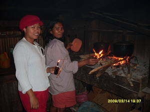
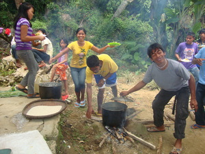

subba  
/subba/
v_rt.
“cook”
vt.
for someone (usually a woman) (egsusubba, migsusubba/insusubba, susubba, agent, eg><ø-rdpCV-) to cook something (egsubbeen, egsubbe:n, insubba/migsubba/pigsubba, subbaa, theme, eg><en-) usually by boiling it in a pot (egsubbaan, egsubba:n, insubbaan/migsubbaan/pigsubbaan, subbai, location, eg><an-)
Egsubba a te sahing.
I will cooked banana.
Egsusubba a te hemey.
I am going to cook rice.
Egsubbeen ku ka atelug.
I will cooked the egg.
Eng. cook; boil
Tag. maglútò
Ceb. maglutò
Ilo.: aglúto
OCM: Food Preparation (252)
Online dict status: -
Usage level: B
n.
(sinuba, <iN>-) cook
Eng. cook
Online dict status: -
Usage level: B
Updated by: RJH,QDL,RAA,NJK
Last updated: 16/Aug/2010
"sinubba" in text "Preparing Ground Corn"
"insubba" in text "Te pegkeen"
"egsubbaa" in healthbook "Nekey-a ka kahew?"
"egsubbaa" in healthbook "Nekey-a ka kahew?"
"egsusubba" in healthbook "Mania teg pakapatey kag iindes?"
This page last updated: 03-Jan-2020
Copyright © 2009-2014, Matigsalug Language Christian Association, Inc